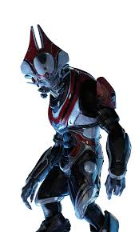

My name is Elijah Najera .
I am a proud student of Perry highschool and Perry/Basha jrROTC airman oringinally from the state of California but started living
in Arizona for about 11 years now.
What I like to do is:
- Games
- Halo
- Minecraft
- RTS games
- Any game that makes me think
- Also any games that makes me shoot mindlessly at enimies in a good way
- A game that has a good story
- Reading
- Any history based books
- Books about my favorit games like Halo: Broken Circle
- Anything related to animals in general
- Drawing
- Whatever comes into my mind
- My dream game concept art
- Music
- Depends on the kind of mood I'm in
- Action and rock
- Party
- Certain kinds of dubstep
- school
- Participating with my jrROTC class in events such a community service, parades, and feild trips
- Software enginearing because I can create code like what makes this page now
What I would like to learn in Software Engineering is to make web pages like these and to learn the basis of creating games.
These are my favorite web pages That I've created in this class so far: